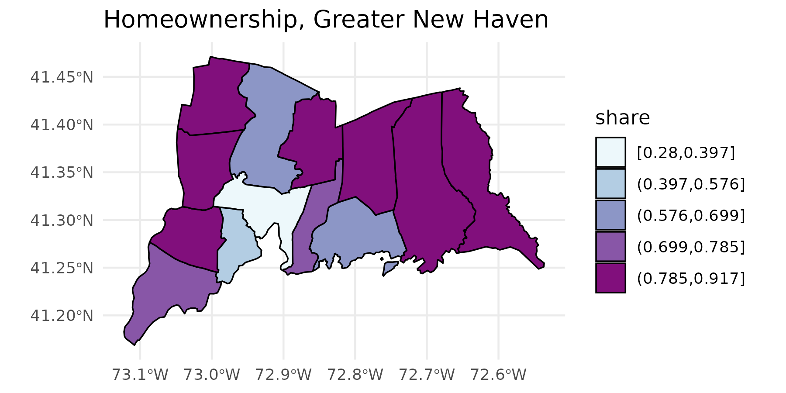
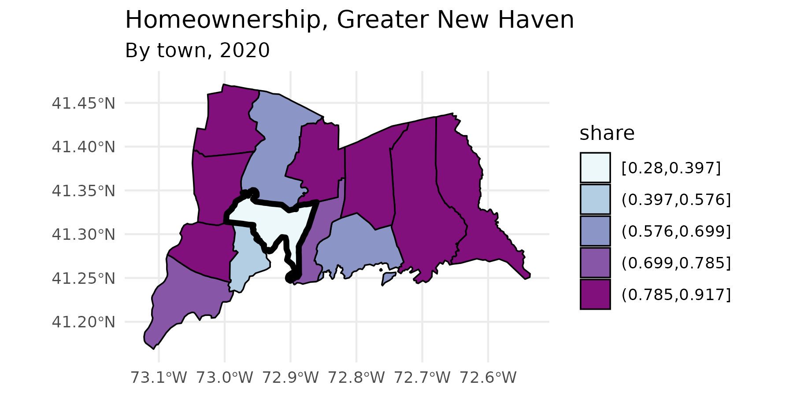
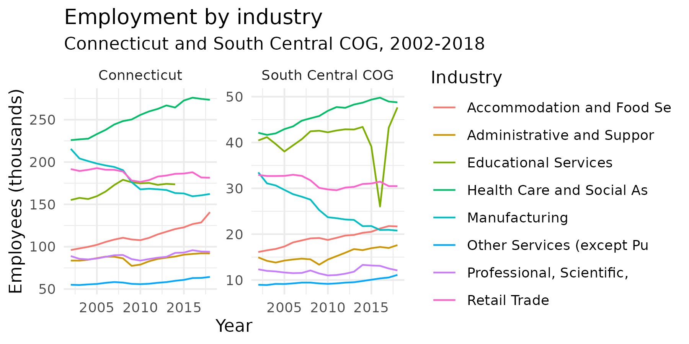

The tables I’m working with are B01003, total population; B03002, race and Latino ethnicity; and B25003, housing tenure. It’s easiest to save these in a named list, then map over the list calling multi_geo_acs() for each table number.
yr <- 2019
table_nums <- list(
total_pop = "B01003",
race = "B03002",
tenure = "B25003"
)Fetching data from ACS
I’m pulling out the entries in the cwi dataset cwi::regions (a list) to only include the Greater New Haven-area ones. Then I fetch the ACS tables for those regions, their towns, and New Haven County.
gnh_regions <- regions[c("Greater New Haven", "New Haven Inner Ring", "New Haven Outer Ring")]
gnh_data <- map(table_nums,
~multi_geo_acs(table = ., year = yr, towns = regions$`Greater New Haven`,
regions = gnh_regions, counties = "New Haven", state = "09"))
gnh_data$total_pop
#> # A tibble: 18 × 9
#> geoid name variable estimate moe level state county year
#> <chr> <chr> <chr> <dbl> <dbl> <fct> <chr> <chr> <dbl>
#> 1 09 Connecticut B01003_0… 3575074 NA 1_state NA NA 2019
#> 2 09009 New Haven … B01003_0… 857513 NA 2_coun… 09 NA 2019
#> 3 NA Greater Ne… B01003_0… 463682 155 3_regi… NA NA 2019
#> 4 NA New Haven … B01003_0… 144487 79 3_regi… NA NA 2019
#> 5 NA New Haven … B01003_0… 188864 125 3_regi… NA NA 2019
#> 6 0900904580 Bethany B01003_0… 5513 19 4_towns 09 New Have… 2019
#> 7 0900907310 Branford B01003_0… 28020 32 4_towns 09 New Have… 2019
#> 8 0900922910 East Haven B01003_0… 28742 30 4_towns 09 New Have… 2019
#> 9 0900934950 Guilford B01003_0… 22216 39 4_towns 09 New Have… 2019
#> 10 0900935650 Hamden B01003_0… 60982 49 4_towns 09 New Have… 2019
#> 11 0900944560 Madison B01003_0… 18113 21 4_towns 09 New Have… 2019
#> 12 0900947535 Milford B01003_0… 54328 88 4_towns 09 New Have… 2019
#> 13 0900952070 New Haven B01003_0… 130331 47 4_towns 09 New Have… 2019
#> 14 0900953890 North Bran… B01003_0… 14191 24 4_towns 09 New Have… 2019
#> 15 0900954870 North Haven B01003_0… 23722 25 4_towns 09 New Have… 2019
#> 16 0900957600 Orange B01003_0… 13934 36 4_towns 09 New Have… 2019
#> 17 0900982870 West Haven B01003_0… 54763 54 4_towns 09 New Have… 2019
#> 18 0900987700 Woodbridge B01003_0… 8827 46 4_towns 09 New Have… 2019Neighborhoods with corresponding tracts or block groups are included for 4 cities (see neighborhood_tracts). Pass those to get neighborhood-level aggregates.
multi_geo_acs("B01003", towns = "New Haven", counties = "New Haven", neighborhoods = new_haven_tracts)
#> Table B01003: TOTAL POPULATION, 2019
#> Geographies included:
#> Neighborhoods: 19 neighborhoods
#> Towns: New Haven
#> Counties: New Haven County
#> State: 09
#> Assuming neighborhood GEOIDs are for tracts
#> # A tibble: 26 × 9
#> geoid name variable estimate moe level state county year
#> <chr> <chr> <chr> <dbl> <dbl> <fct> <chr> <chr> <dbl>
#> 1 09 Connecticut B01003_0… 3575074 NA 1_st… NA NA 2019
#> 2 09009 New Haven County B01003_0… 857513 NA 2_co… 09 NA 2019
#> 3 0900952070 New Haven B01003_0… 130331 47 3_to… 09 New H… 2019
#> 4 NA Amity B01003_0… 4730 504 4_ne… 09 New H… 2019
#> 5 NA Annex B01003_0… 7296 851 4_ne… 09 New H… 2019
#> 6 NA Beaver Hills B01003_0… 4943 461 4_ne… 09 New H… 2019
#> 7 NA Dixwell B01003_0… 5149 470 4_ne… 09 New H… 2019
#> 8 NA Downtown B01003_0… 7616 619 4_ne… 09 New H… 2019
#> 9 NA Dwight B01003_0… 3874 548 4_ne… 09 New H… 2019
#> 10 NA East Rock B01003_0… 8625 1154 4_ne… 09 New H… 2019
#> # … with 16 more rowsAggregating and analyzing data
The total population data is very straightforward, as it only has one variable, B01003_001. The tibble returned has the GEOID, except for custom geographies like regions; the name of each geography, including the names of each region; the variable codes; estimates; margins of error at the default 90% confidence level; the geographic level, numbered in order of decreasing size; and the counties of the towns.
The race and ethnicity table will require some calculations, using the brilliantly-titled camiller package:
- Using
label_acs(), join theracetibble with thecwi::acs_varsdataset to get variable labels. Oftentimes, these labels need to be separated by their"!!"delimeter. - Group by the geographic level, county, and name.
- Call
camiller::add_grps()with a list of racial groups and their labels’ positions in thelabelcolumn. This gives estimates and, optionally, margins of error for aggregates -
camiller::calc_shares()then gives shares of each group’s estimate over the"total"denominator.
gnh_data$race %>%
label_acs(year = yr) %>%
group_by(level, county, name) %>%
add_grps(list(total = 1, white = 3, black = 4, latino = 12, other = 5:9), group = label) %>%
calc_shares(group = label, denom = "total")
#> # A tibble: 90 × 6
#> # Groups: level, county, name [18]
#> level county name label estimate share
#> <fct> <chr> <chr> <fct> <dbl> <dbl>
#> 1 1_state NA Connecticut total 3575074 NA
#> 2 1_state NA Connecticut white 2392013 0.669
#> 3 1_state NA Connecticut black 354120 0.099
#> 4 1_state NA Connecticut latino 574240 0.161
#> 5 1_state NA Connecticut other 254701 0.071
#> 6 2_counties NA New Haven County total 857513 NA
#> 7 2_counties NA New Haven County white 539298 0.629
#> 8 2_counties NA New Haven County black 107111 0.125
#> 9 2_counties NA New Haven County latino 155335 0.181
#> 10 2_counties NA New Haven County other 55769 0.065
#> # … with 80 more rowsWith the tenure table, it’s easiest to separate the labels by "!!". Here the table can be wrangled into shares of households that are owner-occupied.
homeownership <- gnh_data$tenure %>%
label_acs(year = yr) %>%
separate(label, into = c("total", "tenure"), sep = "!!", fill = "left") %>%
select(level, name, tenure, estimate) %>%
filter(tenure != "Renter occupied") %>%
group_by(level, name) %>%
calc_shares(group = tenure, denom = "Total") %>%
filter(!is.na(share))
homeownership
#> # A tibble: 18 × 5
#> # Groups: level, name [18]
#> level name tenure estimate share
#> <fct> <chr> <fct> <dbl> <dbl>
#> 1 1_state Connecticut Owner occupied 905681 0.661
#> 2 2_counties New Haven County Owner occupied 204451 0.618
#> 3 3_regions Greater New Haven Owner occupied 106231 0.599
#> 4 3_regions New Haven Inner Ring Owner occupied 33401 0.623
#> 5 3_regions New Haven Outer Ring Owner occupied 59073 0.794
#> 6 4_towns Bethany Owner occupied 1832 0.908
#> 7 4_towns Branford Owner occupied 8433 0.682
#> 8 4_towns East Haven Owner occupied 8102 0.727
#> 9 4_towns Guilford Owner occupied 7269 0.866
#> 10 4_towns Hamden Owner occupied 14432 0.639
#> 11 4_towns Madison Owner occupied 5919 0.856
#> 12 4_towns Milford Owner occupied 16720 0.745
#> 13 4_towns New Haven Owner occupied 13757 0.28
#> 14 4_towns North Branford Owner occupied 4570 0.856
#> 15 4_towns North Haven Owner occupied 7406 0.817
#> 16 4_towns Orange Owner occupied 4372 0.879
#> 17 4_towns West Haven Owner occupied 10867 0.546
#> 18 4_towns Woodbridge Owner occupied 2552 0.881Visual sketches
geo_level_plot() gives a quick visual overview of the homeownership rates, highlighting town-level values.
homeownership %>%
geo_level_plot(value = share, hilite = "darkslateblue", type = "point")
acs_quick_map() gives a quick map sketch of the rates. This function uses the Jenks algorithm for making breaks with jenks(). This algorithm is well suited for visually displaying larger inequalities, but the number of breaks you give it won’t necessarily be the number of breaks returned.This function lets us see whether there’s a geographic distribution of this data with minimal work.
tenure_map <- homeownership %>%
filter(level == "4_towns") %>%
acs_quick_map(value = share, level = "town", color = "black", size = 0.4,
title = "Homeownership, Greater New Haven", palette = "BuPu")
tenure_map
Since this returns a ggplot object with sf data, we can add additional ggplot functions, such as labeling, themes, or additional scales or geoms.
tenure_map +
labs(subtitle = "By town, 2019") +
geom_sf(data = . %>% filter(name == "New Haven"), fill = NA, color = "black", size = 1.5)
Batch output
Say as part of a pipeline, you need to do some calculations, write different sections of a data frame to CSV files to pass along to a colleague or refer to later, and then continue on to some more calculations. batch_csv_dump() takes either a list of data frames or a data frame plus a column to split by, and writes out a set of CSV files, then lets you move along to the next step in your pipeline.
For example, I need to pull a table of populations by age group for several regions of Connecticut. I don’t need to split populations by gender, so I’ll add up male and female populations for each age group. I don’t actually need to more detailed age groups now, but I need to stash them in files for later, so I’ll aggregate, write a bunch of files, and then aggregate into broader age groups that I need for my current work.
new_haven_regions <- regions[c("Greater New Haven", "New Haven Inner Ring",
"New Haven Outer Ring", "Lower Naugatuck Valley", "Greater Waterbury")]
acs <- multi_geo_acs(table = "B01001", year = yr, towns = NULL, regions = new_haven_regions,
counties = c("New Haven County", "Fairfield County")) %>%
label_acs(year = yr) %>%
# shortcut around tidyr::separate
separate_acs(into = c("sex", "age"), drop_total = TRUE) %>%
filter(!is.na(age)) %>%
mutate(age = forcats::as_factor(age)) %>%
group_by(name, level, age) %>%
summarise(estimate = sum(estimate), moe = tidycensus::moe_sum(moe, estimate) %>% round()) %>%
ungroup()
acs %>%
split(.$name) %>%
batch_csv_dump(base_name = "pop_by_age", bind = TRUE, verbose = TRUE) %>%
group_by(level, name) %>%
camiller::add_grps(list(ages0_4 = 1, ages5_17 = 2:4, ages0_17 = 1:4, ages18_24 = 5:8, ages0_24 = 1:8), group = age, estimate = estimate, moe = moe) %>%
arrange(level, name, age)Employment trends
Quarterly Workforce Indicators
I’m also interested in learning about employment by industry over the past several years. qwi_industry() fetches county-level data by industry over time, either quarterly or annually. Here I’ll look at annual averages of all industries for New Haven County and Connecticut over the past 16 years. I’m filtering out the industry code “00”, which is the counts for all industries.
nhc_employment <- qwi_industry(2002:2018, counties = "009", annual = TRUE) %>%
mutate(location = "New Haven County")
#> The API can only get 10 years of data at once; making multiple calls, but this might take a little longer.
ct_employment <- qwi_industry(2002:2018, annual = T) %>%
mutate(location = "Connecticut")
#> The API can only get 10 years of data at once; making multiple calls, but this might take a little longer.
employment <- bind_rows(nhc_employment, ct_employment) %>%
filter(industry != "00") %>%
inner_join(naics_codes %>% select(-ind_level), by = "industry")
employment
#> # A tibble: 680 × 8
#> year industry state county Emp Payroll location label
#> <dbl> <chr> <chr> <chr> <dbl> <dbl> <chr> <chr>
#> 1 2002 11 09 009 713 NA New Haven County Agriculture, Fore…
#> 2 2002 21 09 009 206 NA New Haven County Mining, Quarrying…
#> 3 2002 22 09 009 1919 NA New Haven County Utilities
#> 4 2002 23 09 009 15480 NA New Haven County Construction
#> 5 2002 31-33 09 009 48366 NA New Haven County Manufacturing
#> 6 2002 42 09 009 16874 NA New Haven County Wholesale Trade
#> 7 2002 44-45 09 009 46246 NA New Haven County Retail Trade
#> 8 2002 48-49 09 009 7775 NA New Haven County Transportation an…
#> 9 2002 51 09 009 14417 NA New Haven County Information
#> 10 2002 52 09 009 13351 NA New Haven County Finance and Insur…
#> # … with 670 more rowsNext, say I want to look at the industries that were largest in New Haven county in 2018, and see how those have changed both for the county and statewide over this time period. I’ll filter employment, get the industries with the largest numbers of employees, then filter employment for just those industries and plot it.
top2018 <- employment %>%
filter(year == 2018, county == "009") %>%
top_n(8, Emp) %>%
pull(industry)
top2018
#> [1] "31-33" "42" "44-45" "54" "56" "61" "62" "72"
employment %>%
filter(industry %in% top2018) %>%
mutate(label = stringr::str_sub(label, 1, 25)) %>%
mutate(Emp_1k = Emp / 1000) %>%
ggplot(aes(x = year, y = Emp_1k, color = label)) +
geom_line() +
labs(x = "Year", y = "Employees (thousands)", title = "Employment by industry",
subtitle = "Connecticut and New Haven County, 2002-2018", color = "Industry") +
theme_minimal() +
facet_wrap(vars(location), scales = "free_y")
Update 11/2021: The QWI API was broken for a little while. It’s up again, but all the payroll data is missing. This code should still be valid if it ever gets returned.
If I’m interested in changes in wages over this period, I can use the adj_inflation() function. This takes a data frame, the name of the column containing dollar amounts, and a base year, then adds two columns for the inflation adjustment factor and the adjusted value.
employment %>%
filter(industry %in% top2018) %>%
mutate(label = stringr::str_sub(label, 1, 25)) %>%
mutate(avg_wage = Payroll / Emp) %>%
adj_inflation(value = avg_wage, base_year = 2018, year = year) %>%
mutate(adj_wage_1k = round(adj_avg_wage / 1000)) %>%
ggplot(aes(x = year, y = adj_wage_1k, color = label)) +
geom_line() +
scale_y_continuous(labels = scales::dollar) +
labs(x = "Year", y = "Average annual wages (thousands)", title = "Average annual wages by industry (adjusted to 2018 dollars)",
subtitle = "Connecticut and New Haven County, 2002-2018", color = "Industry") +
theme_minimal() +
facet_wrap(vars(location), scales = "free_y")Now we have a visual that shows that in a few industries, wages have climbed over the past several years, but in many industries, wages haven’t increased except by inflation.
Local Area Unemployment Statistics
To look at unemployment rates over time, I can use laus_trend(). The LAUS covers smaller geographies than the QWI, so laus_trend() is set up to find data by a combination of state, counties, or towns. The LAUS API returns monthly data on labor force counts, employment counts, unemployed counts, and unemployment rate; laus_trend() lets you specify which of these measures to fetch.
unemployment <- laus_trend(c("New Haven", "New Haven County", "Connecticut"), startyear = 2000, endyear = 2018, measures = "unemployment rate") %>%
mutate(date = paste(year, periodName, "01", sep = "-") %>% lubridate::ymd()) %>%
mutate(value = value / 100) %>%
select(area, date, value)
unemployment
#> # A tibble: 684 × 3
#> area date value
#> <chr> <date> <dbl>
#> 1 Connecticut 2018-12-01 0.032
#> 2 Connecticut 2018-11-01 0.03
#> 3 Connecticut 2018-10-01 0.035
#> 4 Connecticut 2018-09-01 0.035
#> 5 Connecticut 2018-08-01 0.04
#> 6 Connecticut 2018-07-01 0.041
#> 7 Connecticut 2018-06-01 0.042
#> 8 Connecticut 2018-05-01 0.038
#> 9 Connecticut 2018-04-01 0.038
#> 10 Connecticut 2018-03-01 0.043
#> # … with 674 more rows
unemp_plot <- ggplot(unemployment, aes(x = date, y = value, group = area, color = area)) +
geom_line() +
geom_smooth(se = FALSE, method = "loess", size = 0.8)
unemp_plot
#> `geom_smooth()` using formula 'y ~ x'Adding a logo
DataHaven’s logo is saved as an SVG file inside this package. (Folks at other orgs who fork this, feel free to replace with your own logo.) add_logo tacks on a logo, either that default, or another image or ggplot grob, making it easier to create distribution-ready plots (which this one is not, tbh).
add_logo(unemp_plot, position = "right")
#> `geom_smooth()` using formula 'y ~ x'